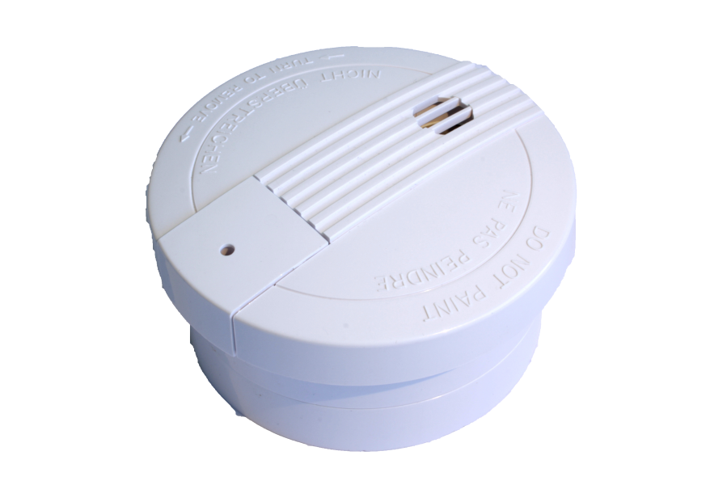

EVR_SF812
Firmware Version : 1.4 |
 |
KurzinfoS Dieses Gerät ist ein Z-Wave-Sensor. Drücken Sie zum Inkludieren oder Exkludieren des Rauchmelders den Inklusions-/ Exklusionstaster an der Rückseite des Gerätes dreimal schnell hintereinander. Gleichzeitig weckt das Drücken dieser Taste den Rauchmelder auf. Weitergehende Informationen finden sich in den jeweiligen Abschnitten dieses Handbuches. |
Produktbeschreibung
Installationsanleitung

- Lösen Sie die Halterungsspange vom Rauchmelder, indem Sie diese entgegen der Uhrzeigerrichtung drehen.
- Lösen Sie das Gehäuseoberteil vom Gehäuseunterteil durch entgegengesetztes Drehen der beiden Teile und Lösen des Verbindungssteckers.
- Öffnen Sie die Batterieabdeckung und verbinden Sie die 9V Blockbatterie mit dem richtigen Anschluss.
- Für die Montage des Rauchmelders befestigen Sie die Halterungsspange mittels der Schrauben an der Wand oder Decke des Raumes.
- Bringen Sie den Verbindungsstecker wieder richtig an und verbinden das Gehäuseoberteil und Gehäuseunterteil wieder miteinander.
- Befestigen Sie den Rauchmelder wieder auf der Halterung, indem Sie diesen in Uhrzeigerrichtung auf die Halterung drehen.
Bitte folgen Sie den Empfehlungen und Positionen für die Platzierung des Sensors, wie im Bild unten angegeben. Ein einzelner Sensor ist im Normalfall nicht ausreichend für eine Wohnung mit mehreren Zimmern. Vermeiden Sie unbedingt, Sensoren in Wand- und Deckenecken zu plazieren.
Verhalten des Gerätes im Z-Wave Netz
I Im Auslieferungszustand ist das Gerät mit keinem Z-Wave-Netz verbunden. Damit es mit anderen Z-Wave Geräten kommunizieren kann, muss es in ein bestehendes Z-Wave Netz eingebunden werden. Dieser Prozess wird bei Z-Wave Inklusion genannt. Geräte können Netzwerke auch wieder verlassen. Dieser Prozess heißt bei Z-Wave Exklusion. Beide Prozesse werden von einem Controller gestartet, der dazu in einen Inklusion- bzw. Exklusion-Modus geschaltet werden muss. Das Handbuch des Controllers enthält Informationen, wie er in diese Modi zu schalten ist. Erst wenn der Controller des Z-Wave Netzes im Inclusion-Modus ist, können Geräte hinzugefügt werden. Das Verlassen des Netzes durch Exklusion führt zum Rücksetzen dieses Gerätes in den Auslieferungszustand.
Bei der ersten Inbetriebnahme des Gerätes ist es noch nicht in einem Z-Wave Netz inkludiert und hat keine assoziierten Geräte. Es bleibt für 10 Minuten im aufgeweckten Zustand, um die Konfiguration zu ermöglichen.
1. Inklusion: Zum Inkludieren bringen Sie zuerst Ihren Z-Wave Controller in den entsprechenden Zustand und drücken anschließend dreimal kurz hintereinander die Inklusions-/Exklusionstaste. Die LED leuchtet beim Betätigen der Taste kurz auf.
2. Exklusion: Zum Exkludieren bringen Sie zuerst Ihren Z-Wave Controller in den entsprechenden Zustand und drücken anschließend dreimal kurz hintereinander die Inklusions-/Exklusionstaste. Die LED leuchtet beim Betätigen der Taste kurz auf.
3. Reset: Um den Reset-Modus zu aktivieren, drücken Sie die Inklusions-/Exklusionstaste dreimal kurz hintereinander. Drücken sie dann innerhalb von einer Sekunde die Taste erneut, bis die LED erlischt. Das Gerät ist nun auf Werkseinstellungen zurückgesetzt.
4. Assoziieren: Zum Assoziieren bringen Sie zuerst Ihren Z-Wave Controller in den entsprechenden Zustand und drücken anschließend dreimal kurz hintereinander die Inklusions-/Exklusionstaste, um das Gerät in den Assoziations-Modus zu bringen. Das Gerät unterstützt bis zu 5 Geräte in der Assoziationsgruppe.
Bedienung des Gerätes
- 1. Der Sensor gibt beim Test oder bei auftretendem Rauch einen akustischen Warnton aus. Wenn der Sensor den Alarm wieder beendet, vergewissern Sie sich, dass kein Feuer oder eine andere Gefahrenquelle vorhanden ist. Entfernen Sie die Batterien des Gerätes nur zum Wechseln!
- 2. Testen Sie gelegentlich und nach längerer Abwesenheit die Funktion des Rauchmelders. Neben dem Test-Knopf ist eine rote LED, die zum Anzeigen der normalen Funktionsweise alle 30 Sekunden aufleuchtet. Wird am Sensor ein Alarm ausgelöst, blinkt die LED schnell. Ertönt beim Testen des Sensor der Alarm nicht, müssen die Batterien des Gerätes erneuert werden.
- 3. Benutzen Sie zum Testen niemals eine offene Flamme. Der Sensor oder ihre Wohnung können dabei Schaden nehmen.
Kommunikation mit einem batteriebetriebenen Gerät
W Das Gerät ist batteriegespeist und damit in der Regel in einem Tiefschlafmodus um Strom zu sparen. Im Tiefschlafmodus kann das Gerät keine Funksignale empfangen. Daher wird ein (statischer) Controller benötigt, der netzgespeist und damit immer funkaktiv ist. Dieser Controller - zum Beispiel ein IP-Gateway - verwaltet eine Nachrichten-Mailbox für dieses batteriegespeiste Gerät, in dem Nachrichten an dieses Gerät zwischengespeichert werden. Ohne einen solchen statischen Controller wird die Nutzung dieses batteriebetriebenen Gerätes sehr schnell zur Entladung der Batterie führen oder die Nutzung ist komplett unmöglich.
Dieses Gerät weckt regelmäßig auf, meldet dies durch Aussenden einer sogenannten Wakeup-Notifikation und leert dann seine Mailbox im statischen Controller. Dafür muss bei der Inclusion die Node-ID des Controllers und ein Aufweckinterval definiert werden. Erfolgt die Inklusion durch einen statischen Controller wie zum Beispiel ein IP-Gateway, wird dieser Controller diese Konfiguration automatisch erledigen und in der Regel eine Nutzerschnittstelle anbieten, um das Aufweckinterval den Nutzerbedürfnissen anzupassen. Das Aufweckinterval ist ein Kompromiss zwischen maximaler Batterielaufzeit und minimaler Reaktionszeit des batteriegespeisten Gerätes.
Das Drücken der In-/Exklusionstaste am Gerät weckt das Gerät für 5 Sekunden auf.
Es ist möglich die Gerätenummer 255 als Zielgerät für die Wakeup-Notifikation anzugeben. In diesem Falle wird die Nachricht als Broadcast an alle Geräte mit direkter Funkverbindung gesendet. Dem Vorteil der sofortigen Benachrichtigung steht als Nachteil gegenüber, das das Gerät gegebenenfalls mehr Zeit im aktiven Modus und damit mehr Batterieladekapazität verbraucht.
Node Information Frame
NIF Der Node Information Frame ist die Visitenkarte eines Z-Wave Gerätes. Es ist ein spezielles Datenpaket, in dem der Gerätetyp sowie die Funktionen des Gerätes bekanntgemacht werden. Inklusion und Exklusion eines Gerätes wird von diesem mit einem Node Information Frame beantwortet. Zusätzlich kann der Node Information Frame für bestimmte Konfigurationsprozesse des Z-Wave Netzes - zum Beispiel das Setzen von Assoziationen - benötigt werden.
Das Drücken der In-/Exklusionstaste am Gerät führt zum Senden eines Node Information Frame.
Assoziationen - wie werden andere Geräte gesteuert?
A Z-Wave Geräte können andere Geräte direkt steuern. Diese direkte Steuerung heißt in Z-Wave Assoziation. In den steuernden Geräten muss dazu die Geräte-ID des zu steuernden Gerätes hinterlegt werden. Dies erfolgt in sogenannten Assoziationsgruppen. Eine Assoziationsgruppe ist immer an ein Ereignis im steuernden Gerät gebunden (Tastendruck oder Auslösen eines Sensors). Bei Eintritt dieses Ereignisses wird an alle in einer Assoziationsgruppe hinterlegten Geräte ein Steuerkommando gesendet.
Assoziationsgruppen:
| 1 | Geräte, die bei Alarm informiert werden (max. Anzahl Geräte: 5) |
Technische Daten
| Batterietyp | 1 * 9V |
| Explorer Frames | Nein |
| SDK | 5.02 pl2 |
| Geräteart | Slave with routing capabilities |
| Allgemeiner Z-Wave-Gerätetyp | Alarm Sensor |
| Spezieller Z-Wave-Gerätetyp | Routing Smoke Sensor |
| Router | Nein |
| FLiRS | Nein |
| Firmware Version | 1.4 |